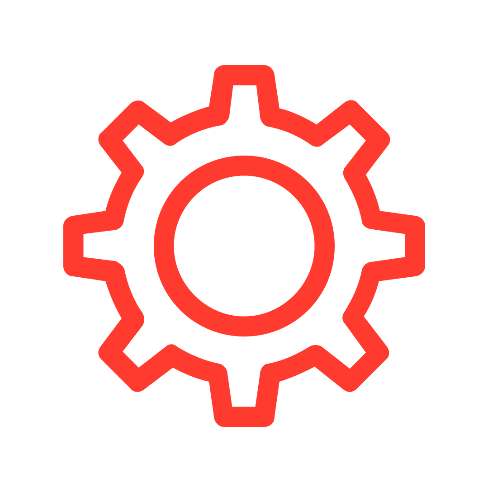
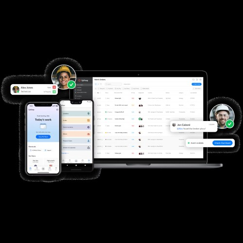

UpKeep
Industry: Enterprise Software, Computerized Maintenance Management Systems (CMMS), Enterprise Asset Management (EAM) & Industrial Tech.
Website
Founder/s: Ryan Chan
Headquarters: Los Angeles, California, United States
Company: Privately held, private equity-backed B2B SaaS
Founded: 2014
Services: Mobile work order management, preventive and predictive maintenance scheduling, enterprise asset management (EAM), spare parts and MRO inventory management, Industrial IoT (IIoT) sensor monitoring (UpKeep Edge), safety and compliance management (UpKeep Safety), no-code custom app builder (UpKeep Studio), AI-generated SOP training (UpKeep Learn), AI maintenance agents (Supernova / UpKeep Intelligence), fleet maintenance, analytics and reliability reporting.
UpKeep (UpKeep Technologies, Inc.) is a mobile-first Computerized Maintenance Management System (CMMS) and Asset Operations Management platform designed for maintenance, reliability, and facility teams. Built originally to replace clunky desktop software and paper work orders on the plant floor, it helps technicians and managers track work orders, schedule preventive maintenance, monitor asset health, and manage spare parts inventory from mobile devices.